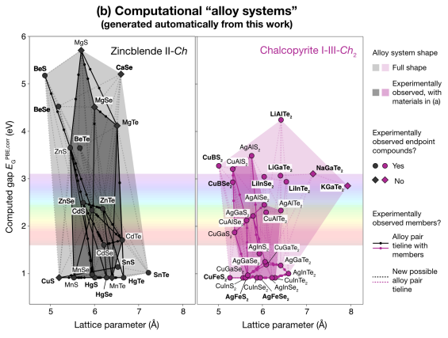

論文紹介
物性物理・材料工学・マテインフォを中心に紹介
2023年の注目論文


過去の注目論文
物性物理

結晶学、マグノンキラリティー、超伝導、ハーフメタル、密度汎関数計算など、物性物理に関する過去の注目論文を紹介する。
- 超伝導
- キラリティ
- 第一原理計算
- ハーフメタル
- ホイスラー
材料工学

多結晶合金や機械的特性、格子歪み、スピントロニクスデバイスなど、材料工学に関する過去の注目論文を紹介する。
- 金属組織
- 弾性論
- コンポジット
- デバイス
- 発電性能
マテリアルズインフォマティクス

過去の膨大な実験データやシミュレーションデータに基づいた探索アルゴリズムなどにより、材料開発のプロセスを効率化したマテリアルズインフォマティクスに関する過去の注目論文を紹介する。
- DFT
- MD
- コンビ
- ハイスループット
- 機械学習・深層学習
- GAN
その他

大規模言語モデル（LLM）を用いた材料設計や物理化学に基づく材料研究開発に関連する上記以外の領域の過去の注目論文を紹介する。
- LLM
- 物理化学
- 熱統計
- ソフトウェア